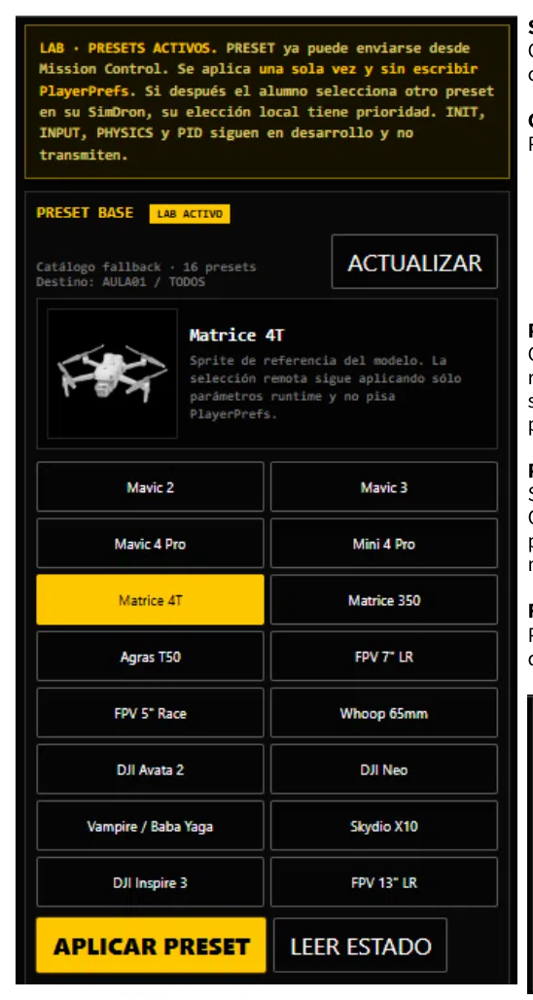

Dron Lab: perfiles y presets
Guía de consulta basada en el manual original. Las páginas del PDF se abren en otra pestaña y las capturas pueden consultarse sin perder tu lugar.
PÁGINA 38 Dron Lab

Dron Lab
Destinado a la configuración de plataforma y perfiles de vuelo.
Selección de preset Cambia parámetros asociados al comportamiento de vuelo.
Configuración de física Puede incluir parámetros como:
masa; potencia; sensibilidad; límites; PID; comportamiento de plataforma.
Preset remoto Cuando Mission Control aplica un preset remoto, este se aplica en el Meta Quest pero no sobreescribe permanentemente las preferencias locales del alumno.
Prioridad local Si el alumno cambia después el preset desde la Quest, ese cambio local vuelve a tener prioridad hasta que el instructor envíe una nueva revisión.
Función práctica Permite comparar plataformas y preparar distintos perfiles sin mantener APK diferentes.